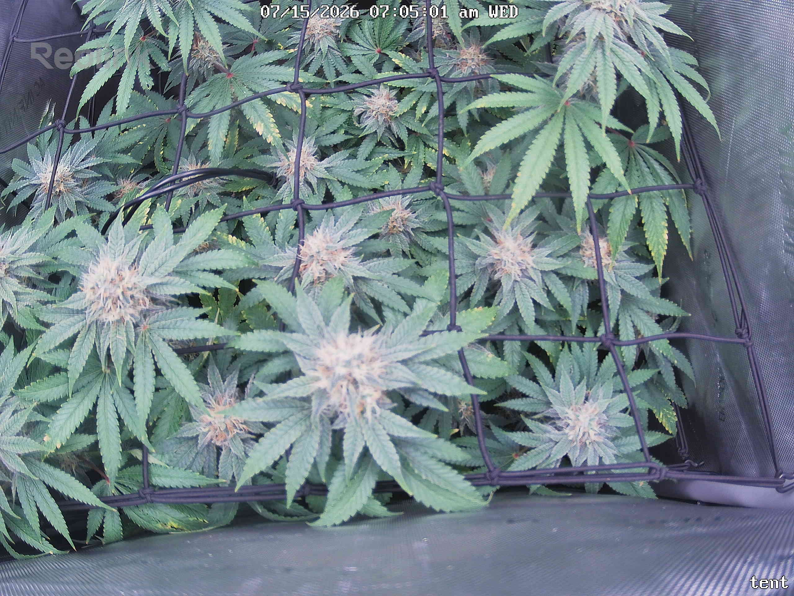
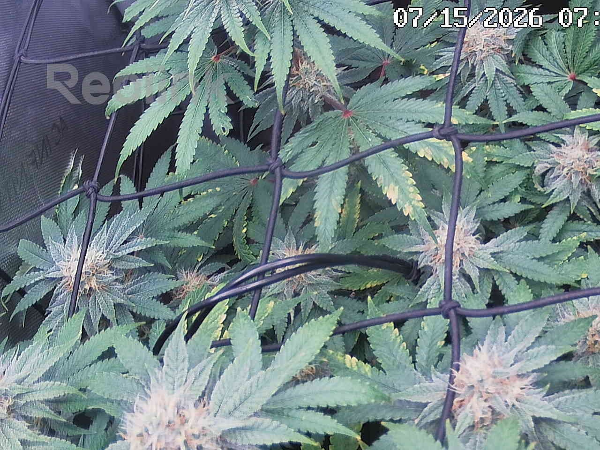
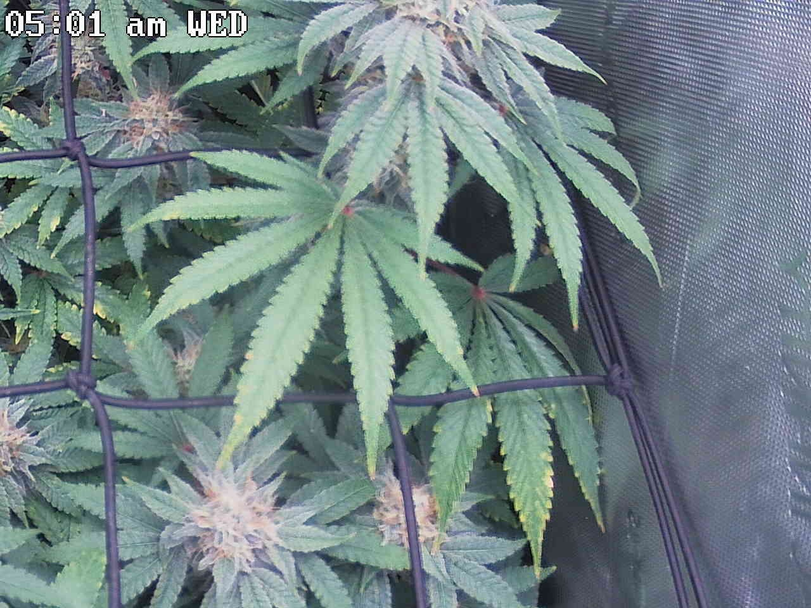
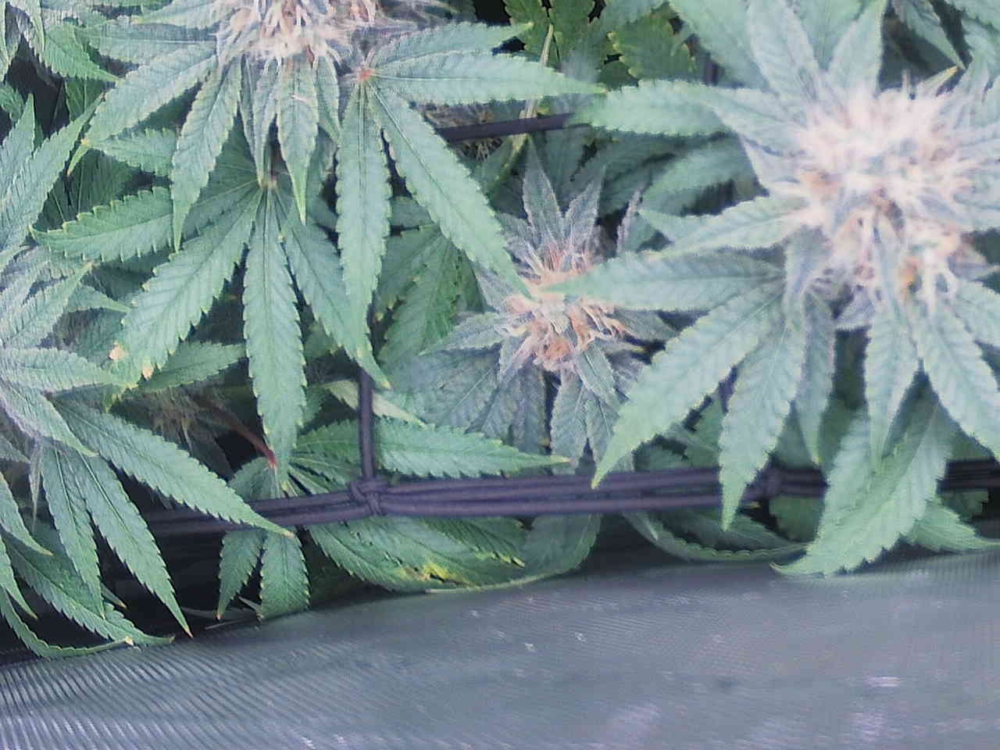
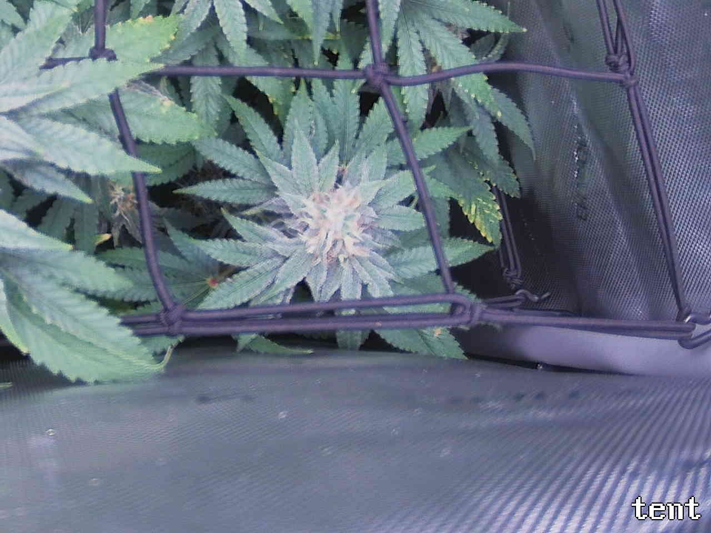
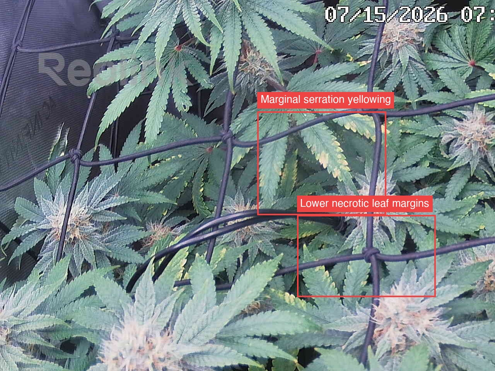
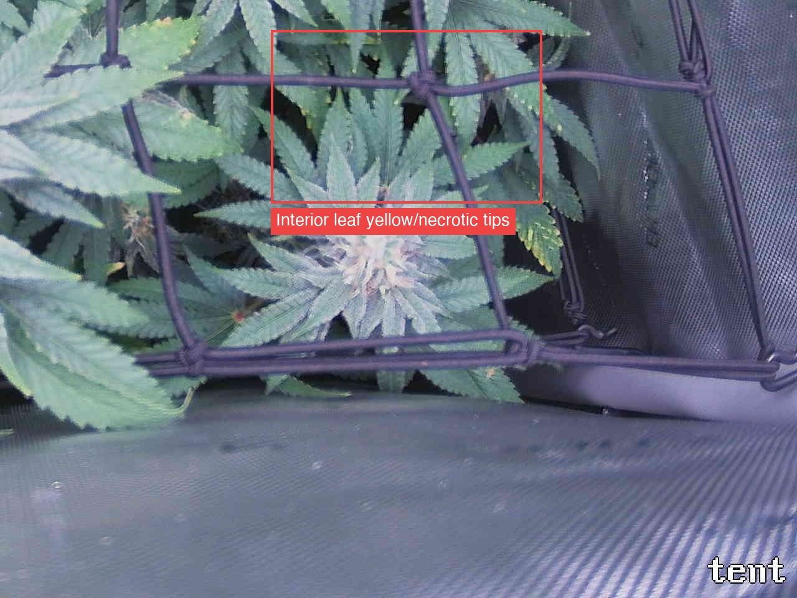

Per-quadrant analysis — the canopy shot was split into a 2x2 grid and each region compared against the previous day.
Overall the plant is healthy and on-track for ~day 41–42 flower: canopy fully closed, tops deep green and frosty with progressing amber/cream pistils (normal bulking), and no pests, mold, mildew, droop, or bleaching on any tile. The one systemic concern is a whole-plant interior fan-leaf fade — marginal/serration yellowing with brown necrotic tips on older, shaded lower leaves — which drove the ATTENTION flags in Top-left (defined margin yellowing plus lower necrotic margins near the drip/net junction) and Bottom-right (necrotic interior tips behind the top net square); the day-over-day trend within each tile is roughly stable to slightly more defined, not clearly accelerating, but this is an already-escalated watch item (logged 7/10, 7/13) and the four tiles show it is plant-wide, not localized. Cause is unresolved between normal wk6–7 senescence and a potassium margin draw, and a top-down photo cannot separate them. Most important action: pull a representative affected interior leaf to localize mobile-vs-immobile pattern and confirm senescence vs K; if K is implicated, correct via living-soil amendment/top-dress or tea rather than a flush.
Bud sites (whole plant, estimate): 11-20

Bud sites: 3-5
